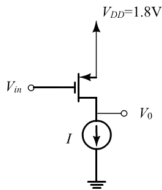

Draw the circuit for a current- source- loaded CS amplifier that uses a PMOS transistor for the amplifying device.

Figure 1
Find the highest instantaneous voltage across drain
Supply voltage and
Over drain voltage
Thus, we get the highest instantaneous voltage across drain, is.